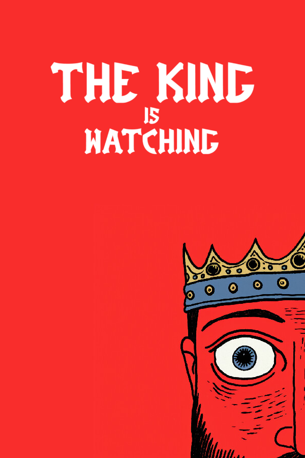

The King Is Watching
Every archived year-end list appearance, including placement and points earned.
About the Game
Kings order - Drill to the Core! About the GameAh, my glorious kingdom! A land where peasants toil, miners dig, and knights train... but only when I look at them! My gaze is law—progress thrives where I watch, but the moment I turn away? Laziness! Chaos! I must choose wisely: should I focus on the fields for food, the mines for riches, or the barracks for defense? With resources, I can even expand my all-seeing gaze, ensuring my kingdom flourishes… and that no one slacks off under my rule!Water, wheat, stone, coal, silver—every resource fuels my empire! Farms feed my people, mines fund my ambitions, and workshops forge mighty defenses. Shall I invest in archers, reinforce the walls, or harness magic? Even my castle needs repairs when the enemy strikes! Every decision shapes my reign, and only a well-managed kingdom will survive the storm. Rulership is no easy task! Each land presents new trials, from cursed cemeteries to infernal depths, forcing me to adapt. Yet every defeat is a lesson! As a true roguelite, my efforts grant permanent upgrades, unlocking new abilities, stronger defenses, and powerful strategies for my next reign. A true king doesn’t just rule—he evolves, forging an unstoppable legacy with each attempt! Each battlefield hides unpredictable threats—enemies are led by unexpected Generals, demanding unique tactics to defeat. Want to conquer them all? You’ll need multiple runs! But fear not! My royal council aids me with cavalry masters, arcane sages, and cunning strategists. With their wisdom—and my unwavering gaze—victory is inevitable!
| Released | 2025-07-21 |
|---|---|
| Developer | Hypnohead |
| Publisher | tinyBuild |
| Genres | Strategy, Indie |
| Platforms | PC |
SingleplayerSteam AchievementsSteam Cloud2DFantasyPixel GraphicsTacticalReplay ValueDark FantasycombatRoguelikeMedieval
Where to Buy
Game information provided by RAWG.
Points by Year
List History
| Year | Source | List | Placement | Points |
|---|---|---|---|---|
| 2025 | Ars Technica | Ars Technica’s Top 20 video games of 2025 | Unranked | 3 |